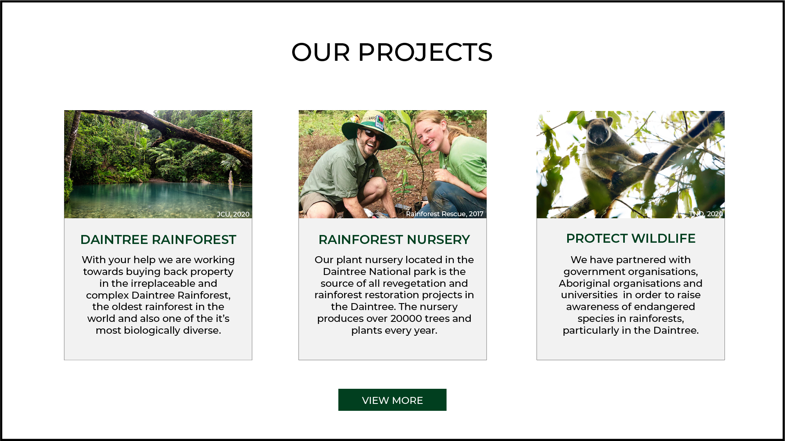
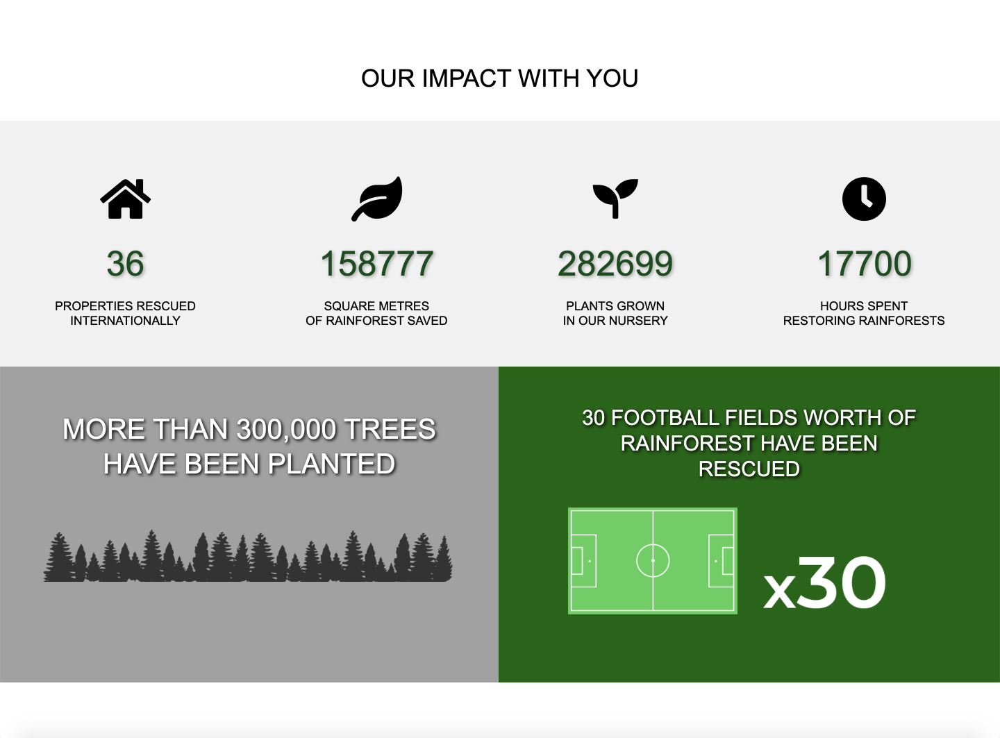
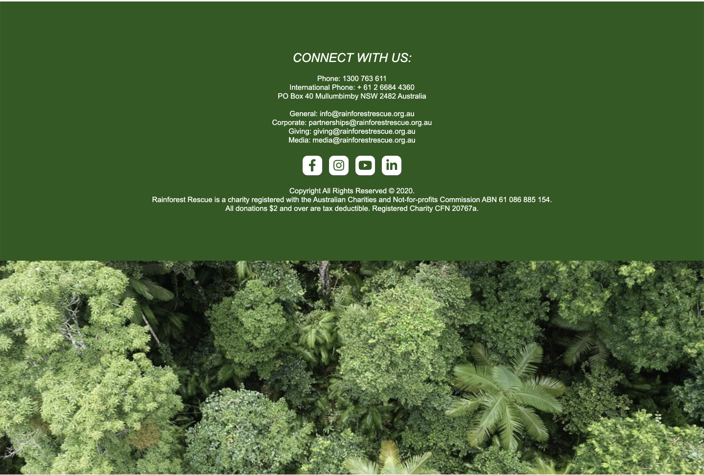

Home Landing Page
Both the original mockup and the final website incorporate a simplistic navbar at the top of the website that allows users to navigate straight to their desired section. The sections in the mockup include 'Our Projects', 'Our Impact' and the 'Make a Donation' page. In the final design, I chose to add an extra section for contact details specifically called 'Contact Us', as this will allow users to feel more connected to the charity and improves the overall usability of the website in providing a direct link to details that will assist them.
I decided to change the proposed logo for the Rainforest Rescue charity to incorporate a more interesting visualin the form of a rainforest leaf behind the charity name. Shades of green were utilised in the graphic to communicate the intentions of the charity in a subtle way. Additionally, the colour green is a calming colour that has a 'balancing and harmonising effect' (Chapman, 2010), as well as being representative of the natural world.
The first iteration of the logo visual and favicon was a lighter version of the leaf graphic, however I found this did not suit the visual design of the website as much as the darker one did. Additionally, the brightness of this logo made the 'rainforest rescue' text in the logo hard to read, so after testing it out on the webpage I decided to recolour it.

Furthermore, the white text provides more of a contrast against the dark grey background of the final website navbar, which I decided to change from the original mockup as the visibility of such was not as clear. In the mockup of the home landing page, the white text is slightly lost as the opacity of the navbar is low, meaning that the white sky of the image behind causes the section headings to be less visible. When moused over by the user, each section transitions to a darker shade of grey in order to improve the user experience and make it more interactive.
The image portion of the mockup and the final website is very similar. The charity slogan can be seen in both in bold white text, providing contrast against the background image. This is further accentuated through a drop shadow on both,which assists in making the text 'pop' against the darker background. The background on the final website home landing section features volunteers walking in a group in a tropical rainforest area, an image suited to the intentions of the charity. I kept the same background image on both the mockup and the final website as it communicates the community aspect of the charity and automatically invites users into this community that is friendly and welcoming upon first glance at the website. I also edited this image to be darker than the original as it allows the slogan to be more visible, as well as looking more professional and 'aesthetic'. Although this photo is not of Rainforest Resscue charity volunteers, the ideal website would include this aspect.
After some consideration, I decided not to include the image carousel feature behind the image slogan as this may complicate the minimalistic design of the landing section, as well as distract from the main slogan that invites users to make a change together with the charity.
Mockup

Final Webpage

Final Webpage- Mobile
Our Projects Section
The 'Our Projects' section of the long scrolling website is very similar in both the mockup and the final website, as I was able to replicate this section quite accurately and did not decide to change much about it. The 'Our Projects' heading uses a minimalistic and readable font in the mockup and the final webpage. In both, the heading is capitalised and black in colour in order to provide a contrast with the white background. This section also contrasts nicely with the home landing page, which is quite dark in colour.
This section features three boxes outlining the projects/programs run by the charity. These include the Daintree Rainforest 'buy back' program, the charity's rainforest nursery located in the Daintree National Park in Queensland, as well as the wildlife protection program that raises awareness of endangered rainforest species. By including the projects run by the charity early on in the user's scrolling journey, they are able to immediately get an understanding of the charity's goals and intentions. This hierarchy provides them with context, and thus incentive to help Rainforest Rescue achieve these goals in the form of donations.
The colour palette utilised in this section includes tropical tones including shades of green, blue and brown. Such colours further communicate the intentions of Rainforest Rescue as a charity,especially in the context of the projects they are passionate about. In choosing to feature images incorporating the colour blue, the colour that represents compassion and kindness (Compassion International, 2020), users are more likely to consider making a donation of any amount than if these images included bright or fiery colours such as red or orange.
I decided not to change the look of the three boxes as the minimalistic layout of this section assists with the communication of the charity's message. Having a minimalistic approach when it comes to layout and colour palette in the context of charity websites ensures that the site will not look cluttered. This is important when considering that users want an clear layout that is easy to navigate and understand, especially when they are deciding whether the charity is trustworthy and/or worthy of their time and money.
Furthermore, the photos chosen to represent each project/program are the same in both the mockup and the final webpage. I decided not to change these as I believe these are effective in communicating the message of each program run by Rainforest Rescue. The first features a lake in the Daintree Rainforest, an image that is very beautiful and tranquil. This communicates to the viewer how important it is to protect such a special and irreplaceable region in Australia, which also extends to other rainforests all around the world.
The Rainforest Nursery program box features an image that depicts two Rainforest Rescue volunteers at the site of the nursery. Not only is this image effective in communicating the charity's values of community, friendship and giving back, it also assists in reassuring the user that the charity is making real change and that they are trustworthy and use donations of people just like them to directly benefit and help the cause.
Additionally, the box featuring the Wildlife Protection program run by the Rainforest Rescue charity includes an image of a possum in a tree in the Daintree Rainforest itself. This helps to contextualise the program to the user, which helps them to feel more compassion towards the animals the charity is aiming the program and more specifically the donations towards.
Mockup
Final Webpage

Final Webpage- Mobile
Our Impact Section
Although there have been several changes made to the original mockup in the final webpage, the layout and elements used in this section are mostly the same. This section is important as it includes statistics to do with the successes of the Rainforest Rescue charity due to the donations they have received from their audience. I chose to display these figures as they assist in demonstrating to the user that their donations will be used for the right reasons, and also that these donations will help the charity reach milestones such as the ones displayed in the visuals. This section, like the one before, includes a capitalised heading in the colour black to contrast against the background for clarity and visability purposes. Under this is is a div that shows 4 key statistics, including the number of properties rescued, the amount of rainforest saved, the number of plants grown in the nursery, as well as the number of hours spent by staff and volunteers restoring rainforest. In both the mockup and final web form, these figures are coloured green to match the colour palette of the website. There is also a drop shadow on these figures to add dimension to the webpage, as well as for visual and aesthetic purposes.
Above these figures are icons that subtly communicate the meaning behind each success. In the mockup these were hollow with a thinner outline, however in the final web page I decided to change these to bolder and larger icons that are slightly different as they are more specific to each figure and its meaning. As pictured below, these icons also incorporate a hover effect when the user mouses over them in order to create a more interactive user experience.

Below these figures are two visuals that communicate more statistics to the audience. The first is the statement that more than 300 000 trees have been planted by the charity, which features on a darker grey background on both the original mockup and the final webpage. The text is similar on both with slight difference in colours used. Another difference is that instead of 'over 300,000 trees', the website version uses 'more than 300,000 trees'. After some reflection and user feedback from friends, I decided that the latter is more effective in communicating the message as it is less ambiguous. Additionally, the line of trees image is featured on the website as it is in the mockup. The treeline fits into the colour palette of the website, with the image silhouette provides contrast with the background. However, due to coding ability it does not look as sophisticated as I would have liked it to be. Despite this it is still an effective visual that adds to the appeal of the website.
The second visual in the webpage also doesn't change dramatically from the mockup version, with only a slight difference in layout and hue. This visual helps to actualise the change made by the charity to the audience, with the football field graphic helping them to visualise the amount of land that has been saved by Rainforest Rescue.
The white text on both of these visuals also contrasts with their background colours and adds to the aesthetic appeal.
Mockup

Final Webpage
Final Webpage- Mobile
Support the Cause Section
This section features another simplistic colour palette, along with a clear design that helps to direct users to the donation portal. I kept a consistent style throughout the website, with this page also incorporating a minimalistic section heading in the colour black that contrasts against the background. The three donation options include a general donation, a monthly donation and the buy back donation program. Each method includes a short description of where the audience's money will be going.
There are only a few slight differences between the mockup and the official website version of this section. These include the green border around the donation headings the colour of the donation buttons that link to the donation portal pages. I decided to change the green border to green text as it is more in line with and matches the aesthetic of the website so far. I changed the colour of the buttons as I liked the contrast it provides not only with the light grey background of the box, but also the orange of the hover effect that occurs when this element is moused over. This provides an element of playfulness and ludic design that improves the user's experience and interaction with the website. These buttons also include drop shadows, as these add dimension to the page and serve well for visual and aesthetic purposes.

Mockup
Final Webpage
Final Webpage- Mobile
Donation Pages
The final donation webpages are linked to their corresponding donation buttons in the 'Support The Cause page', so if the user wants their donations to go to the general donation fund they can select that particular button. If they wish to donate to the 'buy it back' donation program specifically, they can click that link, and same for the monthly donation option. I decided to use separate pages for this element of the website as I wished to branch out from the long-scroll website format and have the donation portals be more sophisticated with their own html pages. This also meant that I could space out the elements more, as seen in the 'select amount', 'personal details' and 'payment details' sections of these pages. I added the 'personal details' section, which allows the user to enter their email and mobile number.
As well as the layout changes, the visual design of the donation portal was also redone. The select amount section incorporates clickable buttons that change colour to give the user visual feedback for their actions and clear up any ambiguity about the amount of money they are donating.
This is also the case for the 'submit donation' button, which changes to a bright orange colour when moused over by the user.
The donation portal pages now feature grey floating boxes with rounded corners and drop shadows for aesthetic purposes. This contributes to the user experience as it minimalistic and creates a clear and easily understandable heirarchy of elements.
Mockup
Final Webpages
Footer
The original footer/footer mockup was only a birds-eye view of the Daintree Rainforest. The rainforest-themed footer image has been utilised in both the mockup and the final webpage in order to stay on theme for the charity, as well as provide an interesting and relevant visual for the user to enjoy. In the final webpage design this was incorporated still, however a green div segment was added above it in order to create a background for important charity details such as contact information and social media links. When clicked, these social media buttons will take the user to the respective social media platform belonging to Rainforest Rescue. In order to elevate the user's experience on the website, the social media buttons are interactive, with the opacity of each button changing when moused over.

The text and social media icons in the footer are coloured white in order to provide a visual contrast against the green background, as well as to ensure readability and ease of understanding.
Mockup

Final Webpage
Final Webpage- Mobile
References
- Chapman, C. (2010). Color Theory for Designers, Part 1: The Meaning of Color — Smashing Magazine. Retrieved 25 November 2020, from https://www.smashingmagazine.com/2010/01/color-theory-for-designers-part-1-the-meaning-of-color/#:~:text=Green%20has%20many%20of%20the,stability%2C%20renewal%2C%20and%20nature.
- James Cook University. Daintree Rainforest [Image]. Retrieved from https://www.jcu.edu.au/daintree/about-us
- Poverty Color Wheel. (2020). Retrieved 25 November 2020, from https://www.compassion.com/poverty/color-wheel-poverty.htm#:~:text=children%20in%20poverty.-,BLUE,is%20the%20color%20of%20Compassion.
- Projects Abroad. Rainforest volunteers [Image]. Retrieved from https://www.projects-abroad.com.au/projects/volunteer-conservation-amazon-rainforest-peru/
- Rainforest Rescue - Together we can Protect Rainforests Forever. (2017). Retrieved 26 October 2020, from https://www.rainforestrescue.org.au/
- The Royal Botanic Garden Sydney. Birds eye view of Australian Rainforest [Image]. Retrieved from https://www.rbgsyd.nsw.gov.au/Science/Rainforest-Conservation-Research/Rainforest-in-Australia
- Tropical North Queensland.org. Wildlife in tree [Image]. Retrieved from https://www.tropicalnorthqueensland.org.au/things-to-do/rainforest-wildlife/